- 01 多线程初阶：解谜多线程世界.md.html
- 02 线程池掌故：管理并发的秘籍.md.html
- 03 锁的奥秘：synchronized 的秘密.md.html
- 04 锁的奥秘：Lock 接口的秘密.md.html
- 05 控制并发流程，并发的巧妙编织.md.html
- 06 ThreadLocal 之珍宝：线程的隐秘宝库.md.html
- 07 CAS：比肩而立的原子魔法.md.html
- 08 容器的魔力：并发世界的宝库.md.html
- 09 结果如何？线程的秘密告白.md.html
- 10 AQS：保证并发安全的终极奥秘（上）.md.html
- 11 AQS：保证并发安全的终极奥秘（中）.md.html
- 12 AQS：保证并发安全的终极奥秘（下）.md.html
- 捐赠
06 ThreadLocal 之珍宝：线程的隐秘宝库
在之前的章节中，我们已经介绍了线程的并发安全问题，这些问题往往由于多个线程竞争访问同一个临界资源而引发。
为了确保临界区的数据正确性，我们主要学习了两种方式来解决并发安全问题：一种是使用final关键字，使数据只允许读取不允许修改；另一种是使用锁机制，以确保在同一时刻只有一个线程可以修改临界区的数据。
本节中我们将介绍第三种保证线程安全的方式，即ThreadLocal。
无论是使用final还是锁，它们的核心目标都是防止多个线程同时修改同一个临界区。但是否有一种更加轻量级和高效的方法呢？我们可以考虑每个线程都维护一个自己的“临界区”，其中每个线程只能访问自己的“临界区”，这样是否能够避免多个线程同时访问同一个临界区呢？
ThreadLocal正是基于这一思路而来的，它将临界变量存放到每个线程的副本中，从而有效地避免了并发安全问题的出现。
ThreadLocal，也称为线程局部变量，是 Java 中一种特殊的变量类型，为每个线程提供独立的变量副本，实现了线程间的数据隔离。它主要应用于解决多线程环境下对共享资源的并发访问问题，同时避免了显式锁机制的复杂性，提高了程序的并发性能和可维护性。
通过ThreadLocal，每个线程可以访问自己独立的变量副本，彼此之间不会相互干扰，从而有效地规避了竞态条件和锁竞争问题，为多线程数据共享提供了更轻量级和安全的解决方案。
在接下来的内容中，我们将对ThreadLocal进行全面的探讨，包括其使用方式、原理解析、实际应用场景、可能存在的缺陷，以及针对这些缺陷的解决方案。
相信通过学习本章节的内容，你将能够轻松掌握ThreadLocal的应用，并在实际开发环境中充分利用它的优势。
一、线程隔离性
ThreadLocal 的线程隔离特性是它的核心特点之一，它使得每个线程都可以拥有独立的变量副本，不受其他线程的影响。
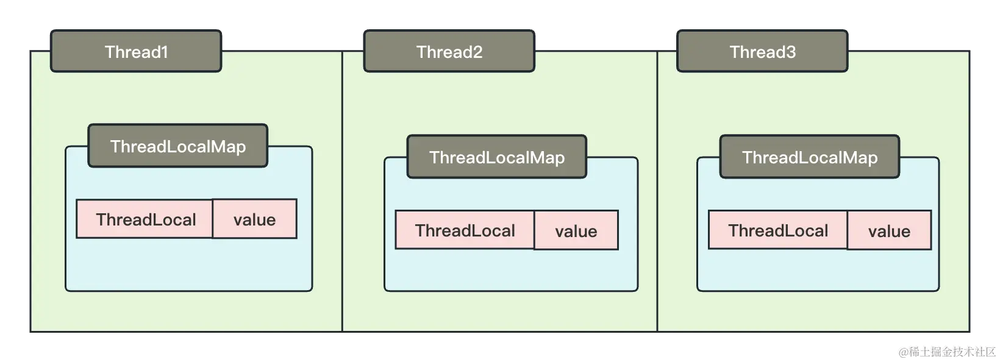
从上图可以了解到，ThreadLocal 存在于每一条线程中，这意味着每个线程都有自己独立的 ThreadLocal 实例，因此不会存在多个线程同时竞争或干扰同一个 ThreadLocal 的操作。这特性为线程安全提供了强大的支持，因为每个线程可以在自己独立的 ThreadLocalMap 中存储自己的数据，而不必担心其他线程的影响。
可能这么说还不太好理解，我们尝试用一个例子说明这个能力。
在 Java 原生提供的时间格式化工具SimpleDateFormat，它是一个线程不安全的工具类，当出现多线程并发使用同一个 SimpleDateFormat 的时候，时间格式化就会出现问题。
我们看代码：
public class SimpleDateFormatErrorTest {
private final static ThreadPoolExecutor EXECUTOR = new ThreadPoolExecutor(10, 20, 60, TimeUnit.SECONDS, new ArrayBlockingQueue<>(1000), Executors.defaultThreadFactory(), new ThreadPoolExecutor.AbortPolicy());
static final SimpleDateFormat simpleDateFormat = new SimpleDateFormat("yyyy-MM-dd HH:mm:ss");
public static void main(String[] args) {
for (int i = 0; i < 1000; i++) {
int finalI = i;
EXECUTOR.execute(() ->{
System.out.println(simpleDateFormat.format(new Date(finalI * 1000)));
});
}
}
}
在介绍这段代码之前，让我们先了解时间戳的规则，这是我们在日常工作中经常使用的。
通常，我们使用
System.currentTimeMillis()来获取时间戳，它返回的是毫秒数。当时间戳为 0 时，代表的是 1970 年 1 月 1 日 00:00:00（协调世界时，UTC）这一刻，这个时刻被称为“Unix 纪元”，起源于 Unix 操作系统的设计。由于中国位于
东八区，相对于协调世界时（UTC）我们快了 8 小时，因此我们使用的是UTC+8时区。因此，在中国，当时间戳为 0 时，实际代表的时间是 1970 年 1 月 1 日 08:00:00。
理解了时间戳的定义后，我们来看上述代码的问题。我们从 0 开始计算，每次打印 0 秒代表的时间、1 秒代表的时间、2 秒代表的时间……以此类推，按照我们初步的分析可得，因为每一次都 +1 操作，所以我们使用 simpleDateFormat 所格式化的时间一定不会一致。但是事与愿违，它会出现重复的时间：
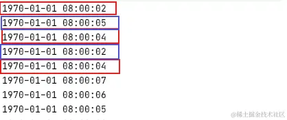
出现这个问题就是因为 SimpleDateFormat 不是线程安全的。所以，我们在开发中规定多线程使用 SimpleDateFormat 的时候，必须要保证每次使用前都 new 一个新实例！
那么我们如何使用 ThreadLocal 使其变得可以在多线程环境下使用呢？假设，我们让每一个线程内部都自己持有一个 SimpleDateFormat，是否就能解决问题呢？
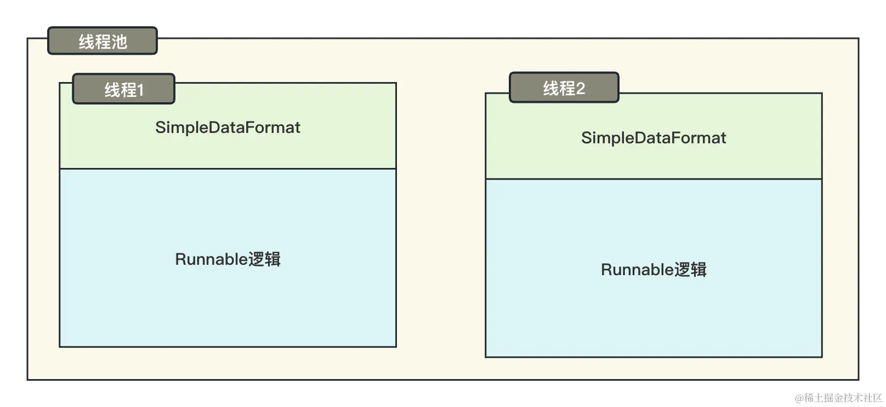
按照上图，我们每一个线程都老老实实地使用自己的 SimpleDataFormat，那么临界区就不会存在并发问题了；那么竞态条件也就不存在了，当竞态条件不存在，并发安全问题也就被顺理成章地解决了。
我们使用代码展示一下：
public class SimpleDateFormatSuccessTest {
private final static ThreadPoolExecutor EXECUTOR = new ThreadPoolExecutor(10, 20, 60, TimeUnit.SECONDS, new ArrayBlockingQueue<>(1000), Executors.defaultThreadFactory(), new ThreadPoolExecutor.AbortPolicy());
public static void main(String[] args) {
for (int i = 0; i < 1000; i++) {
int finalI = i;
EXECUTOR.execute(() ->{
//从当前的线程中获取一个simpleDateFormat
SimpleDateFormat simpleDateFormat = SimpleDataFormatCache.getSimpleDateFormat();
System.out.println(simpleDateFormat.format(new Date(finalI * 1000)));
});
}
}
}
class SimpleDataFormatCache {
/**
* 构建一个ThreadLocal 并在每次调用get方法返回为空的时候调用创建SimpleDateFormat的初始化方法
*/
private static final ThreadLocal<SimpleDateFormat> SIMPLE_DATA_FORMAT_CACHE = ThreadLocal.withInitial(() -> new SimpleDateFormat("yyyy-MM-dd HH:mm:ss"));
public static SimpleDateFormat getSimpleDateFormat(){
return SIMPLE_DATA_FORMAT_CACHE.get();
}
public static void setSimpleDateFormat(SimpleDateFormat simpleDateFormat){
SIMPLE_DATA_FORMAT_CACHE.set(simpleDateFormat);
}
public static void removeSimpleDateFormat(){
SIMPLE_DATA_FORMAT_CACHE.remove();
}
}
我们可以对比一下，与上文不同的是，这里的代码不在所有线程复用一个 SimpleDateFormat，而是每次使用的时候从当前线程的缓存中获取，从而避免了并发操作 SimpleDateFormat 所导致的数据错乱！
这就是典型的线程隔离的特性，在实际的应用场景：
- 在数据库访问应用中，通常需要维护多个数据库连接，每个连接应该由不同的线程使用。ThreadLocal 可以用来维护每个线程独有的数据库连接，以避免不同线程之间共享连接，从而提高数据库访问的效率和安全性。在阿里的 Druid 数据库连接池中就利用了此项技术！
- 在 Web 应用中，用户的会话状态通常需要在不同请求之间保持。使用 ThreadLocal，可以为每个用户的 HTTP 请求创建一个独立的会话上下文，以确保每个用户的数据在不同线程中得到隔离。
二、上下文传递特性
正如之前所讨论的，ThreadLocal 存在于每个线程中，使每个线程能够持有独立的 ThreadLocal 实例，这有助于在当前线程内轻松获取 ThreadLocal 的值。
让我们通过一个例子来进一步说明这一点。
在日常的 Web 开发中，我们经常需要获取当前登录用户的信息和权限。如果不使用 ThreadLocal，我们需要从数据库或缓存中查询用户信息，然后通过方法参数层层传递，最终将用户信息传递到需要的地方。这种情况下，代码可能会变得冗长和复杂。
如果我们在请求开始的时候，比如在前置拦截器中获取请求头中的用户信息，将用户信息从 db 或者缓存中查询之后放到 ThreadLocal 中，那么在后续所有的方法中，都可以从该上下文中获取用户信息。
我们尝试用代码模拟一个在拦截器中拦截用户信息，并传递到线程上下文的例子：
public class ThreadLocalParameterPassing {
private final static ThreadPoolExecutor EXECUTOR = new ThreadPoolExecutor(10, 20, 60, TimeUnit.SECONDS, new ArrayBlockingQueue<>(1000), Executors.defaultThreadFactory(), new ThreadPoolExecutor.AbortPolicy());
public static void main(String[] args) {
InterceptorTest interceptorTest = new InterceptorTest();
ControllerTest controllerTest = new ControllerTest();
EXECUTOR.execute(() ->{
try{
//调用前置拦截
interceptorTest.beforeInterceptor(1);
//执行controller逻辑
controllerTest.deleteById(10);
}finally {
//调用后置拦截
interceptorTest.afterInterceptor();
}
});
EXECUTOR.execute(() ->{
try{
//调用前置拦截
interceptorTest.beforeInterceptor(2);
//执行controller逻辑
controllerTest.deleteById(11);
}finally {
//调用后置拦截
interceptorTest.afterInterceptor();
}
});
}
}
class InterceptorTest {
/**
*
* 前置拦截
* 模拟从请求头中获取userId
* @param userId 用户的名称
*/
public void beforeInterceptor(int userId){
//模拟查询数据库或者缓存
User user;
if(1 == userId) {
user = new User("小红", userId, "北京市朝阳区");
}else {
user = new User("小绿", userId, "北京市海淀区");
}
UserContext.setUser(user);
}
/**
* 后置拦截
*/
public void afterInterceptor(){
//删除本次线程缓存
UserContext.removeUser();
}
}
class ControllerTest {
public void deleteById(Integer id) {
ServiceTest serviceTest = new ServiceTest();
serviceTest.deleteById(id);
}
}
class ServiceTest {
public void deleteById(Integer id) {
User user = UserContext.getUser();
try {
System.out.println(user.getName() + "开始删除数据...");
TimeUnit.SECONDS.sleep(2);
System.out.println(user.getName() + "删除成功...");
writeLog(true, "成功");
} catch (InterruptedException e) {
e.printStackTrace();
writeLog(false, e.getMessage());
}
}
public void writeLog(boolean success, String errorMessage){
User user = UserContext.getUser();
System.out.printf("开始记录日志：用户%s根据id删除了某个东西，结果是:%s, 信息是:%s%n", user.getName(), success, errorMessage);
}
}
/**
* 构建用户上下文
*/
class UserContext {
private static final ThreadLocal<User> USER_CONTEXT = new ThreadLocal<>();
public static User getUser(){
return USER_CONTEXT.get();
}
public static void setUser(User user){
USER_CONTEXT.set(user);
}
public static void removeUser(){
USER_CONTEXT.remove();
}
}
class User {
private String name;
private Integer userId;
private String address;
public User(String name, Integer userId, String address) {
this.name = name;
this.userId = userId;
this.address = address;
}
篇幅原因，删除get/set方法 读者自行添加......
}
我们模拟了一个拦截器拦截用户信息的例子，注意代码中后置拦截器是将 ThreadLocal 删除了的。在日后的开发工作中，使用完毕 ThreadLocal 一定不要忘记删除这个缓存，否则可能会出现内存泄漏的问题，后面有详细讲解。
三、知其然知其所以然
我们上面介绍了两个特性，那么 ThreadLocal 是如何做到线程隔离的呢？
通过上面的图示能够看出来，它之所以能够做到线程隔离，是因为它是存在于线程内部的。我们看下相关源码：
public class Thread implements Runnable {
ThreadLocal.ThreadLocalMap inheritableThreadLocals = null;
}
从源码中可以看到，在线程的内部是存在一个 ThreadLocalMap 的，它是一个关键的存在，内部可以存储多个 ThreadLocal。存储结构如下图所示：
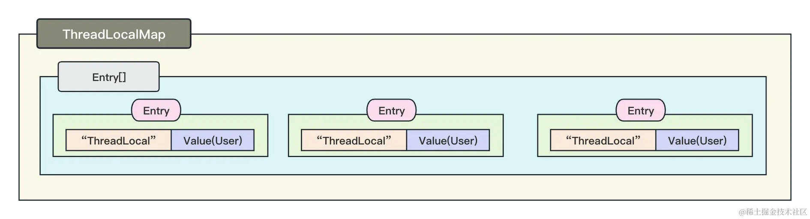
它首先会将 ThreadLocal 与要缓存的值包装成一个 Entry，然后将 ThreadLocal 哈希运算出数组索引后，追加到数组中，最终在一个 Thread 中就存在了一个 ThreadLocal 的引用！
在初次接触 ThreadLocal 时，我曾有一个疑问：为什么需要使用数组来存储多个 ThreadLocal 实例？难道不可以只使用一个吗？
实际上，在一个线程内可以存在多个 ThreadLocal 实例。举例来说，我们可以同时使用两个 ThreadLocal，一个用于存放用户信息，另一个用于存放权限信息。这就导致在 ThreadLocalMap 中存在多个 ThreadLocal 实例的映射。
下面，我们将结合源码来一起揭开 ThreadLocal 的真面目。
首先，我们看它的 set 方法，看它究竟是如何与线程关联起来的。
public void set(T value) {
//获取当前的线程
Thread t = Thread.currentThread();
//从当前的线程中获取ThreadLocalMap
ThreadLocalMap map = getMap(t);
if (map != null) {
//如果不为空，直接将数据放到map中
map.set(this, value);
} else {
//如果为空则创建map，并将数据放到map中去
createMap(t, value);
}
}
可以看到，它是直接获取的当前的线程，然后从当前线程中获取我们上文提到的 theadLocalMap，最后进行的写入。具体流程如下：
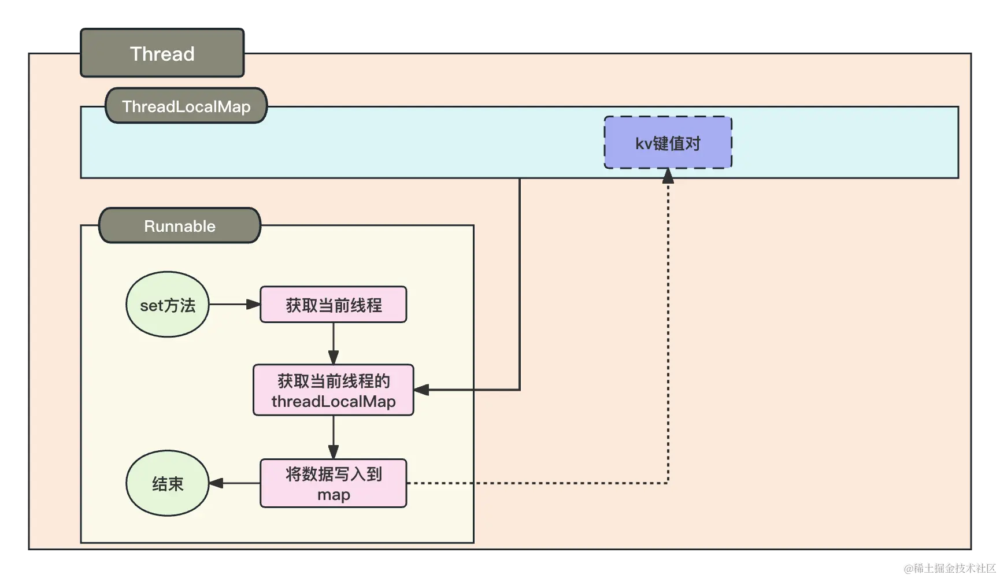
那么，如何从线程中获取 ThreadLocal 的值呢？我们再关注一下 get 方法的源码：
public T get() {
//获取当前线程
Thread t = Thread.currentThread();
//获取线程中的map
ThreadLocalMap map = getMap(t);
if (map != null) {
//将自身当作key 获取值
ThreadLocalMap.Entry e = map.getEntry(this);
if (e != null) {
@SuppressWarnings("unchecked")
T result = (T)e.value;
return result;
}
}
//如果map为空，则获取初始化方法 前面simpleDateFormat的例子上有演示该方法
return setInitialValue();
}
get 方法与 set 方法的逻辑很相似，也是从当前线程中获取 map，然后 hash 运算计算出位置之后，再获取数组里面的值并返回。
四、ThreadLocal 所谓的内存泄漏
相信大家在网上学习 ThreadLocal 的时候，恐怕看到的最多的就是：ThreadLocal 的设计问题会导致内存泄漏。
内存泄漏这个关键词太亮眼了，所谓的内存泄漏并不是说一旦发生内存泄漏，程序就会出现 OOM 这种重大事故。
假设有一个 static 的 map 成员变量，我们向里面 put 了一个数据，然后我们使用完这个数据后没有删除这个数据，也没有定义自动清理它的功能，这也叫内存泄漏！
用完的数据、没有用的数据但是却没有删除，白白占用着内存空间就是内存泄漏问题！
理解了这个，我们来分析：ThreadLocal 真的就那么容易产生内存泄漏问题吗？
我们先分析下所谓的内存泄漏导致的原因。细心的同学应该能够看到，我在介绍 ThreadLocalMap 的时候，对 Entry 中的 ThreadLocal 打了一个引号！因为 Entry 被定义为了一个弱引用，一个对象当只剩下弱引用指向一个对象时，垃圾回收器通常会在适当的时机回收这个对象。
我们看下 Entry 的定义：
static class Entry extends WeakReference<ThreadLocal<?>> {
/** The value associated with this ThreadLocal. */
Object value;
Entry(ThreadLocal<?> k, Object v) {
super(k);
value = v;
}
}
可以看到，Entry 是一个 WeakReference 的实现，在 Entry 中，ThreadLocal 也就是我们前文分析的 key，调用了 super 方法被传递到了弱引用的构造器中，而 value 被一个成员变量存储是一个强引用！明晰了 key 为弱饮用、value 为强引用，那么我们如果要分析内存泄漏的问题，就必须知道弱引用到底是一个什么东西。
我们根据下图来一起分析一下：
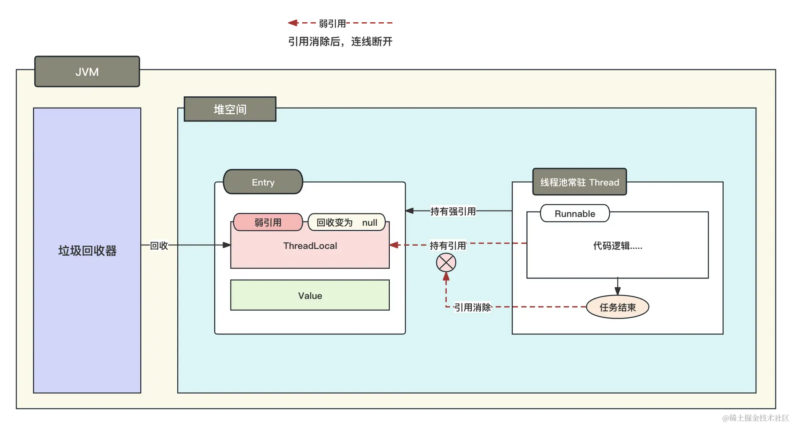
上图比较复杂，我们分析下，ThreadLocalMap 的生命周期是根据 Thread 的生命周期来的，如果线程运行完就销毁，那么内存泄漏也不存在！但是事实上我们生产环境中，不可能不使用线程池，线程池创建的核心线程基本都是常驻线程，常驻线程的生命周期是永久性的，所以 ThreadLocalMap 中的数据只要你不删除，那么它就是永久性存在的！
如上图，Runable 持有的是 Entry 的强引用，在 Entry 中，key 为弱引用，Value 为强引用，正常运行中 JVM 不会强制回收被 Thread 持有的强引用，当 Runable 运行完毕后，Runable 所持有的 ThreadLocal 引用会被释放，此时 Entry 中就存在了一个 key 为弱引用的数据。当一个对象只剩下弱引用的时候，JVM 就会回收这个对象，回收完成后，此时的 key 就会等于 null。
为什么要设计为弱引用呢？
我们在上文分析过，ThreadLocal 是和线程挂钩的，当一个线程的任务运行完毕后，ThreadLocal 的值就再也用不上了，因为它只服务于这个线程里面的任务，任务都运行完了，那么 ThreadLocal 的存在就没有用了。正是考虑到这个问题，所以 JVM 希望在一个任务运行完毕后，ThreadLocal 能够自己清理掉一部分无用数据以节省内存！
那么，ThreadLocal 是如何自己清理这一部分无用数据的呢？我们分析一下 set 方法：
private void set(ThreadLocal<?> key, Object value) {
....
if (!cleanSomeSlots(i, sz) && sz >= threshold)
//重新进行哈希运算
rehash();
}
rehash 中会调用 reset 方法，reset 方法又会调用 resize 方法，最终在 reset 方法中会做 key 的清理：
private void resize() {
....
for (int j = 0; j < oldLen; ++j) {
Entry e = oldTab[j];
if (e != null) {
ThreadLocal<?> k = e.get();
//如果key为空
if (k == null) {
//将value也设置为空 以方便value被jvm回收
e.value = null; // Help the GC
} else {
....
}
}
}
....
}
我们在调用 set/get/remove/rehash 任意一个方法，ThreadLocal 都会验证 key 是否为 null，如果确实是 key 为 null，则将 value 也设置为 null。这样 value 的强引用就被断开了，value 就会被 JVM 回收。
事实上，我们通过分析可以得知，弱引用的设计恰恰就是为了帮我们解决内存泄漏的问题的，弱引用的存在能够使得对象在使用完毕后自动将 key 变为 null，从而使得 ThreadLocal 能够发现这些 key 为 null 的数据然后清除的。
但是因为 ThreadLocalMap 是定义在 Thread 中的，而 Thread 又是线程池里面的线程，是一个不会停止的线程，所以导致 ThreadLocalMap 永远也不会释放。我们在使用 ThreadLocal 往里面 set 值的时候如果不调用 set/get/remove/rehash 任意一个方法，那么就会导致 ThreadLocalMap 中的 null -> value 即使已经完全没有作用，但是这辈子也不会被释放的问题！
注意，即使我们不使用线程池也绕不开这个问题，你不主动使用线程池但是你所用的 Tomcat 里面用的有线程池呀，一个请求被分发到 controller 这个过程其实就对应着一个 Tomcat 线程池中的线程执行任务的过程！
所以，在使用过程中一定要注意：使用完毕后调用 remove 删除！使用完毕后调用 remove 删除！使用完毕后调用 remove 删除！重要的事情说三遍。
五、子线程参数传递
我们通篇文字，都强调了一个问题，ThreadLocal 是和当前线程绑定的，它不支持跨线程。如在 A 线程上给 ThreadLocal 设置了值为 1，在 B 线程获取这个值获取的为 null！因为 1 只存在于 A 线程上！
下面演示一个反例：
public class NullThreadLocal {
private final static ThreadLocal<Integer> THREAD_LOCAL = new ThreadLocal<>();
public static void main(String[] args) {
THREAD_LOCAL.set(1);
System.out.println("线程：" + Thread.currentThread().getName() + "获取到数据为:" + THREAD_LOCAL.get());
new Thread(()->{
System.out.println("线程：" + Thread.currentThread().getName() + "获取到数据为:" + THREAD_LOCAL.get());
}, "子线程").start();
}
}
最终能够得到结果：
线程：main获取到数据为:1
线程：子线程获取到数据为:null
可以看到，不同的线程是无法相互获取值的，原因上面也分析过，因为它是线程隔离的。那么如果我们想要在子线程上也适用 ThreadLocal 的值，则需要重新设置：
public class ChildThreadLocal {
private final static ThreadLocal<Integer> THREAD_LOCAL = new ThreadLocal<>();
public static void main(String[] args) {
THREAD_LOCAL.set(1);
System.out.println("线程：" + Thread.currentThread().getName() + "获取到数据为:" + THREAD_LOCAL.get());
//获取主线程的值
Integer integer = THREAD_LOCAL.get();
new Thread(()->{
//设置到子线程
THREAD_LOCAL.set(integer);
System.out.println("线程：" + Thread.currentThread().getName() + "获取到数据为:" + THREAD_LOCAL.get());
}, "子线程").start();
}
}
执行结果如下：
线程：main获取到数据为:1
线程：子线程获取到数据为:1
六、实际应用案例
这里我会将生产环境中的一些实际截图拿出来，帮助你更好地应用 ThreadLocal。
1. 用户信息上下文
- 封装用户信息上下文管理器。首先，我们封装了一个能够帮助更加简单地获取用户登录信息的上下文工具类：
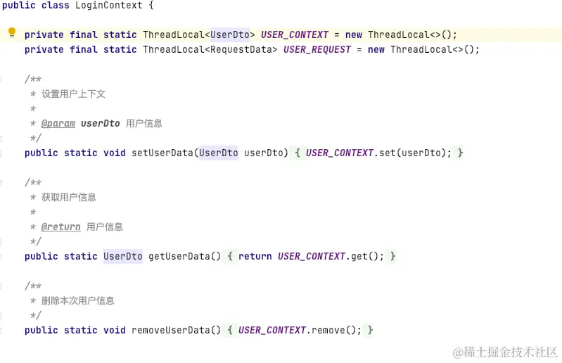
- 拦截器设置用户上下文。我们在全局的拦截器中使用这个工具类来存储用户的登录信息：
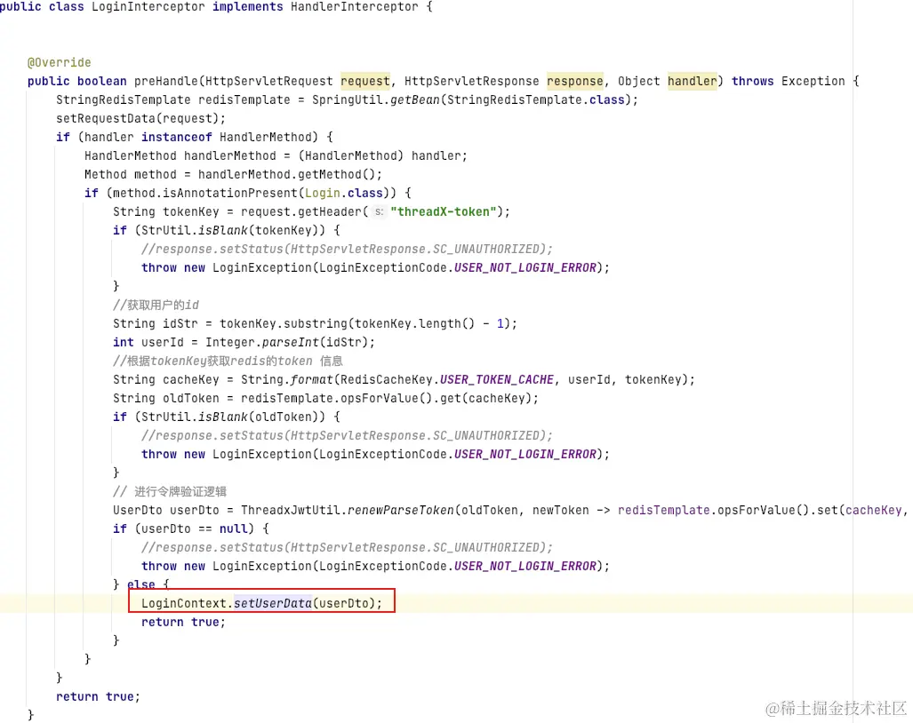
- 使用用户上下文。拦截器中设置了用户的登录信息后，在后续的业务处理方法中就可以直接获取 ThreadLocal 中存储的用户信息：
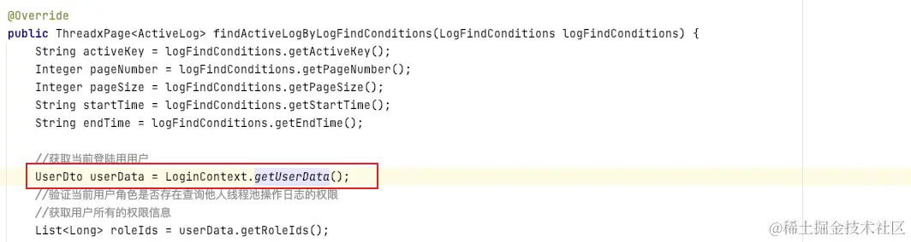
- 清除上下文中的数据。最后当然别忘了在使用完后，在后置拦截器中删除这些数据：
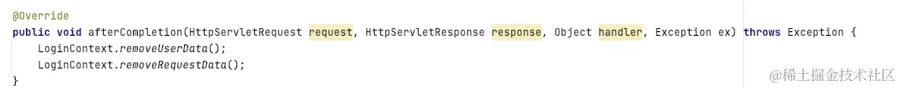
2. Spring 中对于 ThreadLocal 的应用
在 Spring 中同样对于 ThreadLocal 有一个广泛的运用，比如使用 ThreadLocal 存储 RequestAttributes，它内部存放了各种与请求相关的信息：
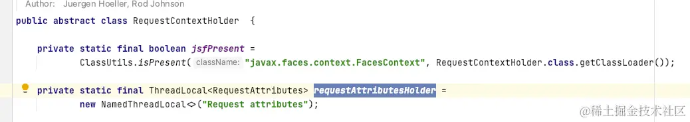
尝试获取请求中的参数信息：
七、总结
在本章节中，我们详细学习了 ThreadLocal。
我们深入探讨了 ThreadLocal 的使用、原理、注意事项和实际应用案例，为开发者提供了全面的指导。在实际开发中，使用 ThreadLocal 需要理解其内部的工作机制，包括数据的存储和清理过程，这样才能更好地管理和利用 ThreadLocal。
ThreadLocal 是一个很有用的工具，用于实现线程间数据隔离，但也需要小心使用，以避免潜在的内存泄漏问题。
理解 ThreadLocal 的工作方式，包括底层的数据结构和清理机制，对于开发者来说至关重要。只有通过清晰的认知，开发者才能更好地管理 ThreadLocal 的当前状态，确保它的使用在多线程环境中是安全和可靠的。
总之，ThreadLocal 是多线程环境下的一个重要工具，它可以用于实现线程安全的数据隔离和上下文传递。掌握 ThreadLocal 的原理和最佳实践将有助于编写高效、可维护的多线程应用程序。
© 2019 - 2023 Liangliang Lee. Powered by gin and hexo-theme-book.